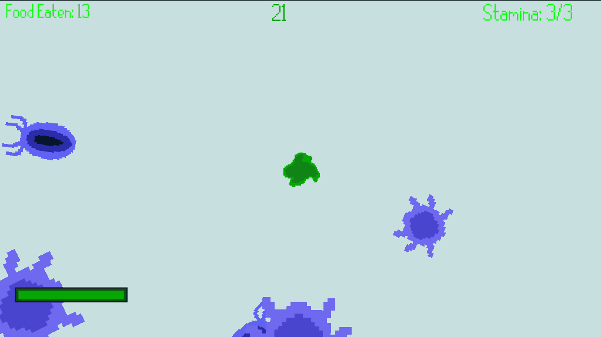
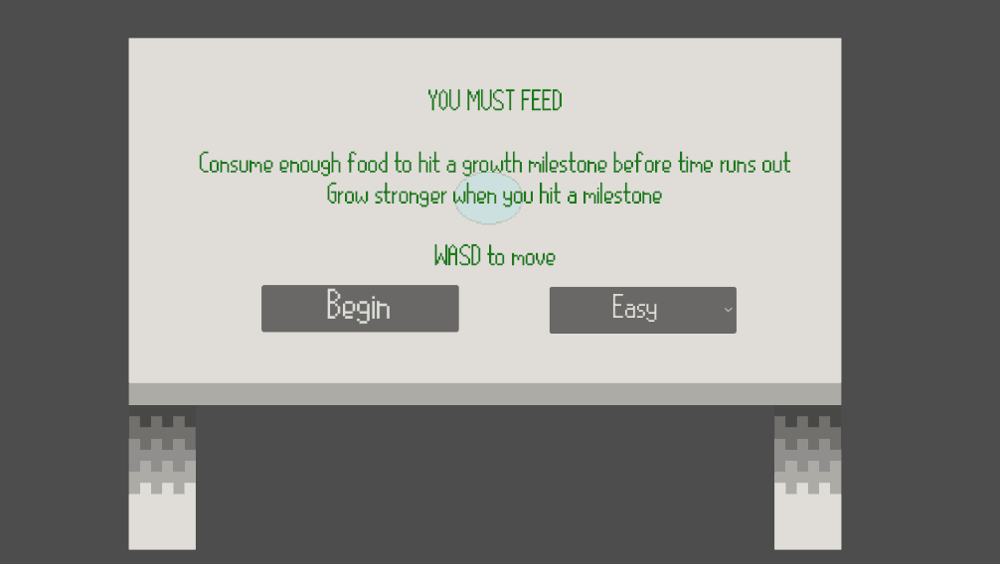
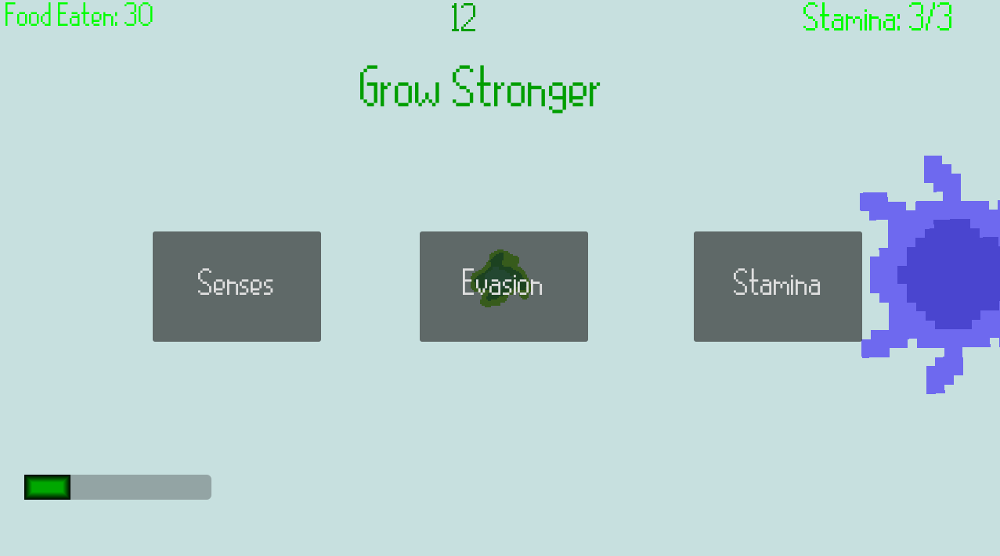

The concept
The jam theme was “Contamination.” Videos featuring a slime mold named Jerry inspired the creature, while someone else suggested the feed-and-grow format.
MINIGAME JAM / TEAM PROJECT
Game jam theme: Contamination
A feed-and-grow survival game where you play as a slime mold.
Eat oats and bacteria, avoid predators, and survive as long as you can.
Explore gameplay ↓
01 / THE PROJECT
Quick context before the gameplay and technical details.
Reaching a food milestone resets the timer. Missing one costs some health, then the timer restarts.
02 / IN ACTION
Play the UMD Game Developers Club build, or view screenshots below.
Click inside the game to focus it. Use the arrow keys to move and Z to dash.
Temporary UMD-hosted link. If the game doesn't load here, open it in a new tab.


03 / HOW WE MADE IT
A short development story: the idea, the implementation, and the decisions made under a jam deadline.
The jam theme was “Contamination.” Videos featuring a slime mold named Jerry inspired the creature, while someone else suggested the feed-and-grow format.
Eating advanced food checkpoints. Depending on the checkpoint, players chose a stat upgrade or gained an ability. In the upgrade menu, Senses affects viewing range and Evasion affects detection chance.
Dash was implemented; the planned slime-shooting ability did not make it into the jam build.
04 / MY WORK
Make your responsibilities clear without claiming the whole team's work.
Programmed movement, dashing, and enemy behavior. Built food-based checkpoints with choices to upgrade size, speed, stamina cooldown, detection chance, or viewing range.
I designed shared detection and size checks, with different reactions for each enemy type. Pill bacteria sought oats and fled larger microbes; spider microbes chased smaller microbes and fled larger ones.
Detection chance determined whether an enemy reacted. I adapted a teammate’s food-spawning script for enemy spawns.
05 / LOOKING BACK
The game was playable, but enemy AI behaved inconsistently and excessive spawns made survival feel repetitive. There was also no sound feedback.
Fix the enemy behaviors, rebalance spawn rates, and add sound effects to make gameplay more engaging and responsive.
Play the UMD-hosted build (temporary link).
Programming: Yusuf Hasan and Siraj Khan · Art: Jayce Johnson